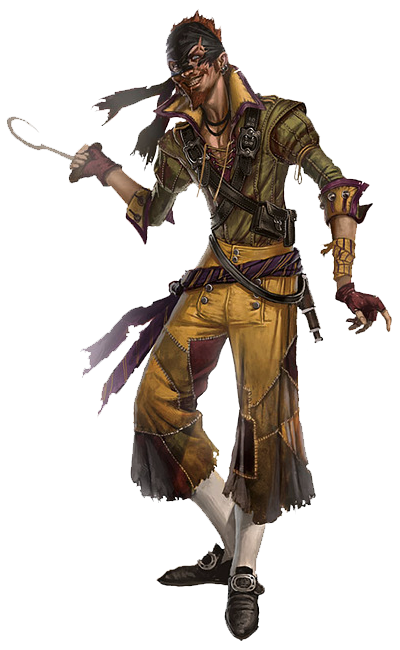
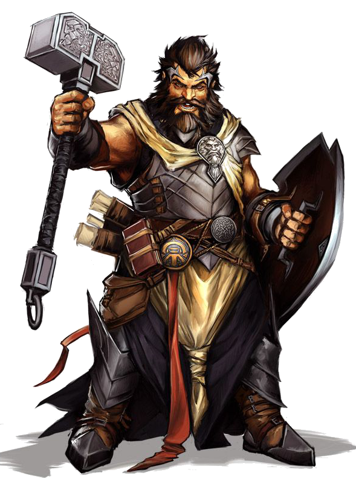
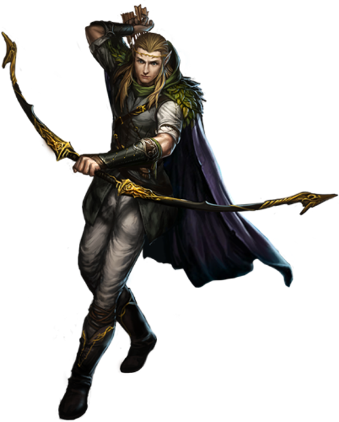
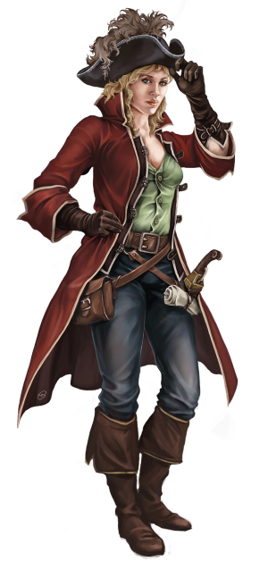
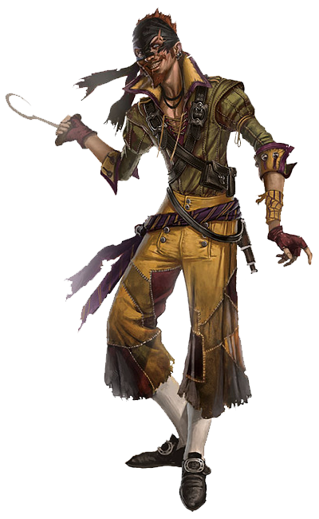
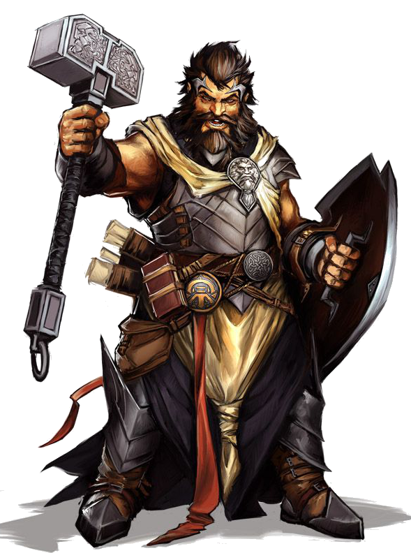
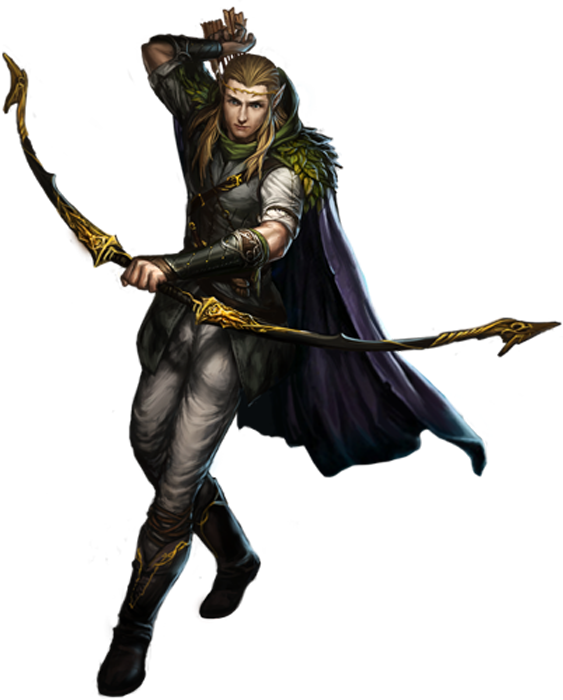
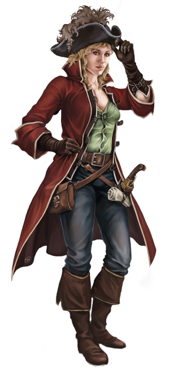
 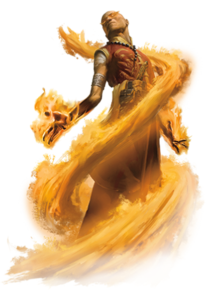
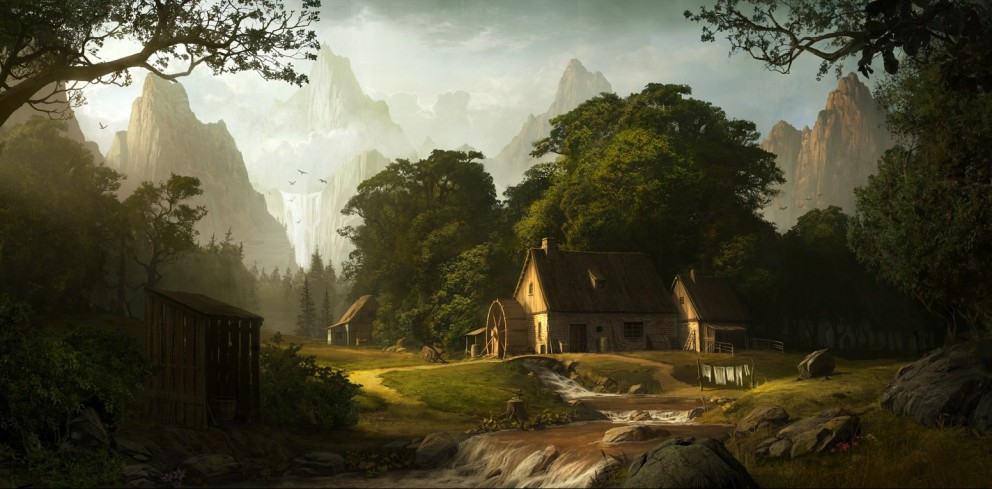
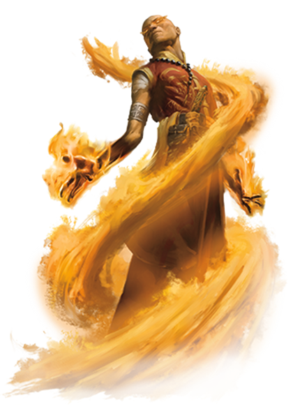
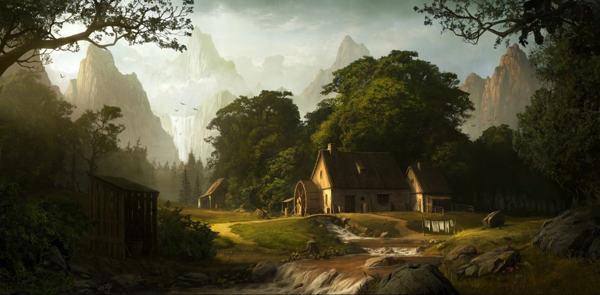
Hace mucho tiempo, cuando el tiempo y el espacio danzaban sin orden en la infinidad del cosmos, cinco seres de pura energía, formados de todo lo que no es y es al mismo tiempo, tomaron conciencia de sí mismos… Cuando observaron el caos que les rodeaba, estos seres, sacrificaron su propia existencia para fusionarse con la infinidad del cosmos y crear algo, de la nada. De este sacrificio surgieron cinco hijas, cada una representaba un poder elemental que regía sobre las leyes de la existencia, la pasional Feuer, portadora del fuego, dador de luz y calor y purgador de los malvados, la inamovible Boden, portadora de la tierra, creador de todo los hogares y todo lo que nace de sí, la suave y observadora Luft, portadora del aire, el que abraza en su seno el resto de elementos y los acompaña siempe, la eternamente cambiante Wasser, portadora del agua, creador de vida y de los cambios y Zeit, la hermana mayor, señora del tiempo y el espacio.
Juntas estas hermanas se dieron de la mano creando todo el mundo con el poder elemental que se les había otorgado nada más nacer. Un mundo donde poder crear vida, tal y como hicieron sus ancestrales progenitores.
Boden, con su fuerte voluntad, hizo brotar un árbol de la tierra, Wasser lo hizo crecer con su agua sagrada hasta ser inmenso, Boden quemo el tronco del árbol con su fuego purificador y Luft con su viento aullante agito el árbol y extendió las llamas hasta que éste cayó quebrado por la mitad y Zeit hizo transcurrir el tiempo en ese árbol, para que se pudriera, hasta que de un musgo pequeño y brillante surgió un agujero… De este hueco, salieron los cinco primeros hijos, uno representante de cada raza y ligado directamente a cada diosa.
Cada hermano vertió su semilla sobre el musgo sagrado, creando más miembros de su especie para liderarlos e investigar el mundo tan nuevo que les rodeaba, los dos hermanos inmortales, llamaron a sus razas Elfos y Drachen, vinculados a Wasser y Luft, y partieron al interior del continente donde se encontraban los grandes bosques. Otros dos, llamaron a su mortal pueblo Humanos y Enanos, vinculados a Feuer y Boden, los humanos se quedaron cerca de la costa y las llanuras con buenos campos cerca de esta, los enanos partieron a las montañas, atraídos por ellas. El último hermano llamó a su pueblo los Dunkel, vinculados a Zeit, este pueblo comenzó a instalarse alrededor de Geburtswiege, pues amaban a las diosas por encima de todo y no querían separarse de aquel lugar sagrado.
Cuando las diosas vieron que sus hijos tomaban las riendas de su destino, desaparecieron sin dejar rastro y solo dejaron detrás de si cinco cristales que entregaron a la orden de los Vertreter, éstos llevaron los cristales, a los que llamaron Edelstein, a sus capitales y construyeron templos para cuidarlos y venerarlos, con la esperanza de que algún día, las diosas volvieran. Algunos privilegiados eran capaces de canalizar en su cuerpo la energía elemental del cristal y manejar el elemento correspondiente, esos seres fueron llamados Zauberer, magos en la lengua Uralt, los Zauberer guardaron los secretos de la creación y fundaron una orden para defender todo Daist frente a cualquier amenaza e imponer el orden.
Muchos años han pasado de esa época de magos, diosas y fantasía, todo se ha convertido en mitos y los inmortales y mortales han olvidado las antiguas enseñanzas, emponzoñadas por la sangre de todas las guerras que se libraban…
En un pequeño pueblo, llamado Starten, a las afueras de la capital Humana, Aterisch, la vida de cierta persona estaba a punto de dar un vuelco, que lo cambiaría para siempre y a todo aquel que lo rodeaba….
Pulsa ENTER para continuar